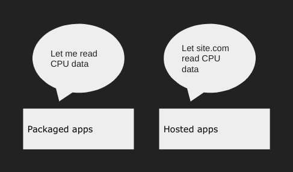

It was just past midnight on the morning of September 13th, 2022 (12:20 AM EST specifically). Almost everyone was asleep at the time. Bypassi had just been having a very insightful conversation with CompactCow#4717 in the Titanium Network Discord server, but then he went to sleep too. By the time the sun rose the next morning, the landscape of bypassing filters would be forever changed. Over the next couple of weeks, this method would be used by tons of students around the world, and hundreds if not thousands of sysadmins would be massively trolled. This is the story of how LTBEEF was found, how it works, and also my unsolicited opinions on sysadmins and their whiny raging. But before we can continue, there are four questions that need to be answered.
Well, they're collections of scripts running in the background of Chrome.
Generally, blocker extensions (like GoGuardian and Securly) are
extensions, since Chrome provides these extensions which the
chrome.webRequest and chrome.tabs APIs, which can be
used to block websites.
Most people know that force-installed extensions is in the
ExtensionInstallForcelist section of your district's
chrome://policy setup. The point of these is that they're,
well, forced (duh), so you aren't supposed to be able to get rid of them. Even
if you have Inspect Element allowed, Chrome prevents you from inspecting
force-installed extensions.
But most people have never heard of a component extension. These are
extensions that Google itself puts into Chrome. There are very, very few
of these but it's worth noting that their permission level is higher than
force-installed extensions. For example, they can even run code on
chrome:// pages if they want to. The only way to really view
these extensions is from chrome://extensions-internals.
The difference between packaged apps and hosted apps is huge. Packaged apps are just regular apps and games such as Cut the Rope. Hosted apps, on the other hand, are like instructions to the browsertelling them to act as if some website is an application. That website will then be able to access stuff that an app would, along with extra permissions in the downloaded manifest file.
There are very few practical uses for hosted apps; at best, they can allow gaming websites to use accelerated 3D rendering. When a hosted app is downloaded, clicking on its launcher icon will just take you to the website itself. Since these apps are so useless (and because they use Manifest V2), Google is no longer allowing hosted apps to be downloaded from the Chrome Web Store. Eventually, they will be fully phased out.
management permission?